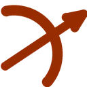
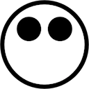
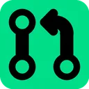
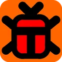
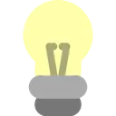
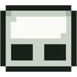

Badges
Overview
Badges are icons on your Rotur account that signifies a notable achievement, such as being on a certain system, having 10+ friends, or having 1,000+ credits. As of now, badges on accounts are only visible on originOS, Discord (through roturBOT), orion, Indigo, mobile.rotur.dev, originchats.com, and Rotur Assistant. While some badges, such as system badges, are automatically given out, there are a handful of badges that are manually given out by Mistium. Below is current list of known badges alongside how to get them. Some badges listed below are currently unobtainable.
System Badges
System badges are automatically given out upon being on a given system. Not all systems have badges. Rotur Assistant decided to fill in the blanks of some badgeless systems. The systems that currently come with badges are:
- - originOS ()
- - Orion (

) - - Asier System (
 )
) - - Nex ()
- - Rotur Assistant (
 )
)
When viewing peoples' profiles on Rotur Assistant, Rotur Assistant decided to fill in the blank on some other systems that don't come with badges. These badges are only visible within Rotur Assistant, and nowhere else. These include:
- - rotur ()
- - originChats ()
- - mistwarp ()
- - HuopaOS (

) - - Constellinux ()
- - kyrOS ()
- - flf (

) - - OliveOS ()
- - geec os (
 )
) - - Warpdrive ()
- - PassNet ()
Discord ()
This badge is automatically given out to people who link their Discord account to their Rotur account using roturBOT's /link command. This badge is no longer obtainable, as a result of roturBOT on Discord being shut down in favor of the OriginChats version of the bot.
Friendly ()
This user is automatically given out by to people who have 10 or more friends added on Rotur.
Rich (

)This badge is automatically given out to people with 1,000 or more credits.
Pro ( )
)
This badge is automatically given out to people who have a Rotur Pro or Rotur Max subscription.
Architext (

)This badge is given to users who make a pull request to any official Rotur product, or the API itself, and have it approved and merged. However, unlike all the badges mentioned so far, this badge is manually given out. You may have to notify Mistium if you want to claim this badge once you meet this condition. There are people who have met this condition, but don't yet have this badge.
Bugger (

)This badge is given to users who successfully report a bug either related to Origin or Rotur, and have it patched. Since this badge is manually given out, you may have to notify Mistium if you want to claim this badge once you meet this condition. There are people who have met this condition, but don't yet have this badge.
Spark (

)This badge is given out to users who suggest a feature for Origin or Rotur and have it implemented. Since this badge is manually given out, you may have to notify Mistium if you want to claim this badge once you meet this condition. There are people who have met this condition, but don't yet have this badge.
Rotur Dev ()
This badge is given out to people who are part of the Rotur Dev team. The people who have this badge can be found on Rotur Assistant's Rotur wiki page (except for ThatBeaverDev and Stormy, unfortunately). To differentiate this badge from Rotur Assistant's fill-in badge for the 'rotur' system, Rotur Assistant added a green dev mark in the middle of it, based on Discord's now-removed Active Dev badge.
Colon Three ( )
)
This badge was given out to people who, during a limited time, paid Mistium 20 credits. This badge is no longer obtainable. Rotur Assistant's fill-in badge for the 'flf' system is this badge, except rotated 90 degrees counterclockwise.
Gingerbug (

)Similar to the colon three badge mentioned above, this badge was exclusively given out to ren by paying Mistium 100 credits. Only ren has this badge.
Placeholder ()
Like the system badges that Rotur Assistant decided to fill in earlier, this badge is exclusively seen within Rotur Assistant, and nowhere else. This badge represents badges that Rotur Assistant does not recognize yet.